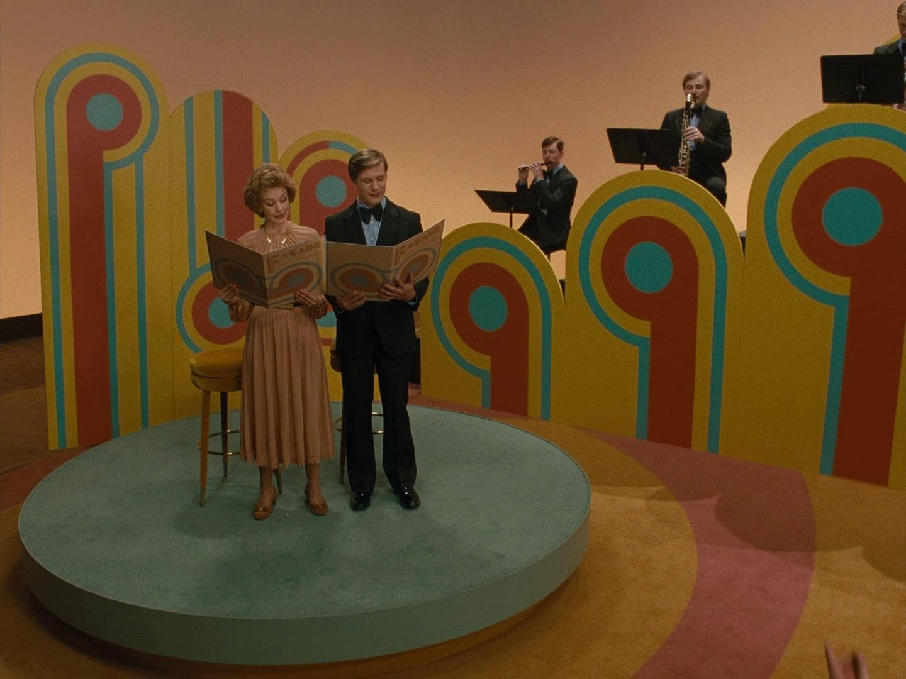
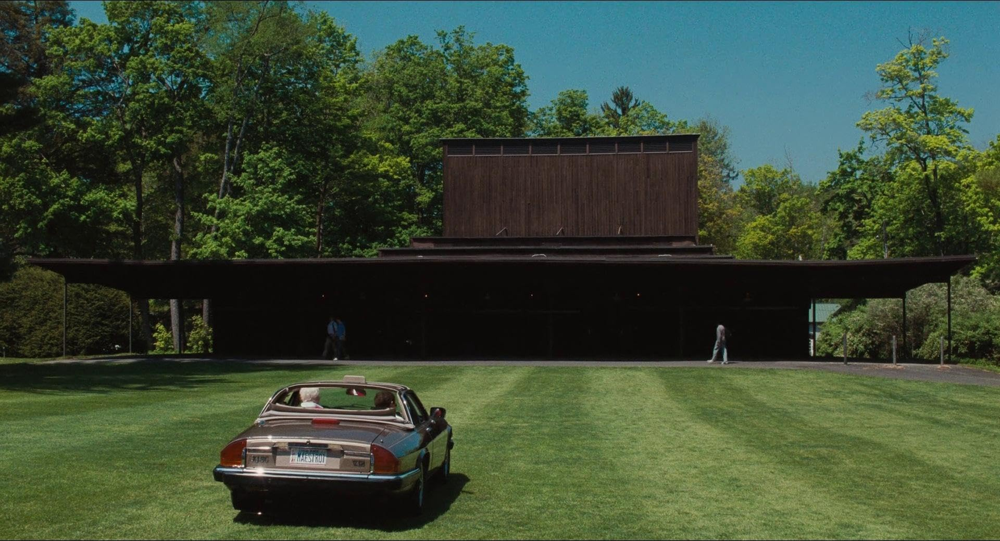
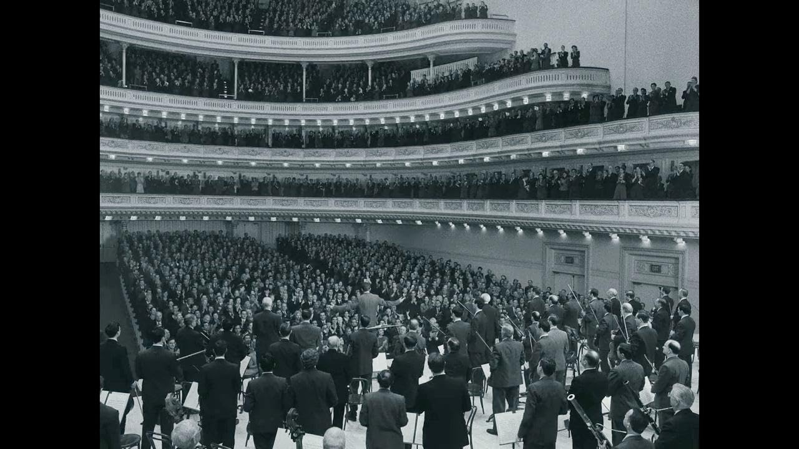

- Directed by Bradley Cooper
- Starring
- Carey Mulligan
- Bradley Cooper
I apologize for being away for so long – but I’ve been concentrating on a novel
Now - ‘Maestro’. I must tell you I saw Bradley Cooper’s version of ‘A Star is Born’ and did not like it one bit. I’ve come to the conclusion, over the past few years, that the only version worthy of mention, is the original, with Janet Gaynor and [the wonderful] Frederic March.
All that aside, I was looking forward to Mr. Cooper’s new film.
What can I say. I’ve been to it twice, and all I can report is that it’s a hotch-potch of a film.
Starting in black and white and on a block screen, reminiscent of the thirties and forties, suddenly transforming into colour, but still on the block screen. We have a series of scenes which don’t appear to have any connection. One doesn’t know what the timeline is or if there is any time-line continuity.
 How is his bow tie the least interesting thing in the room?!? Amazing!We see Bernstein as the serial bisexual male, a fact well-documented over time, then he meets his wife an acclaimed Chilean actress and she marries him knowing full well the other side of him.
[And as a foot note, why is one of the other men always played by Matt Bomer – is there no one else to play these roles?]
They produce three children, we touch fleetingly on Bernstein’s own compositions, we meet some known Hollywood and Broadway names, and we have a quick mention of West Side Story and Stephen Sondheim. The movie musicals of Bernstein get a mention, as does, what I consider his best composition, ’Candide’. I would have liked to hear more of that.
The marriage and the raising of the children all appears to happen off-stage.
 Now that's a mid life crisis!We have a wonderful performance of the final movement of Mahler’s 2nd Symphony, ‘The Resurrection’ the choral movement, which is stupendous, as well it should be. Cooper is at his height replicating Bernstein’s conducting of this masterwork – for me this is the highlight of the film, but at the same time I have to ask why? It doesn’t really carry the narrative along, it’s just a welcome addition to the musical highlights.
 "Anyway, here's Wonderwall"The wife becomes ill with breast cancer and the latter part of the film deals with her illness and her death.
For me a resounding let-down. And I didn’t want it to be.
As a side issue, I’ve never seen so many cigarettes smoked in a film since the Humphrey Bogart movies of the 1930s.
[There should be a warning at the start of the film, considering the fate of the wife.]
Not a happy chappie.
Star Rating: 2/5